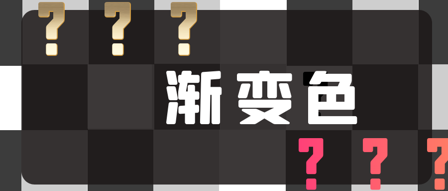

iOS设置渐变色，给border设置渐变色
本文将从4行代码出发给一个view设置渐变色，分别会谈到几个重要的渐变色相关属性，在使用过程中有几个需要特别关注的点。
给一个view的border设置渐变色是比较高阶的用法，希望本文可以在这个方面帮助到你。

到公众号【iOS开发栈】学习更多SwiftUI、iOS开发相关内容。
给view设置渐变色
通过4行代码就可以给一个view设置渐变色：
1 | let view = UIView(frame: CGRect(x: 100, y: 100, width: 100, height: 100)) |
在创建CAGradientLayer以后需要设置frame才能展示出来，否则它的大小会使用默认的0。
渐变色会根据colors数组来展示，这个数组的类型是CGColorRef，所以需要用.cgColor强制转换；如果使用的OC语法，必须加上(__bridge id)，否则渐变色会显示不出来。
默认情况下渐变会从上至下，可是通过设置startPoint和endPoint来改变这个顺序：
1 | gradientLayer.startPoint = CGPoint(x: 0, y: 0) |
这两个点的范围是从0到1，也就是说最左边和最上边是0，最下和最右是1。这个例子中渐变会变成从左上角到右下角。
渐变色还有一个重要的属性是locations，这个属性是用来指定colors中设置的每个颜色的终点的。
1 | gradientLayer.locations = [0.2, 0.8] |
locations中元素的范围是从0到1。在这里，数组中的第一个元素0.2指定了colors数组中第一个元素红色的终点是0.2，也就是说把整个渐变色范围分成10份，从开始到2/10处都是纯红色，从2/10到8/10处是纯红色到纯黄色的渐变，而从8/10到10/10是纯黄色。
给view的border设置渐变色
使用UIBezierPath来创建一个带圆角的CAShapeLayer，并且把它的圆角设置成view的圆角，就可以把一个view的border设置为渐变色。
1 | ... // 同上给view设置gradientLayer |
- borderWidth shapeLayer的border宽度和view的相同，可以根据设计图来设置。
- cornerRadius UIBezierPath的圆角和view的圆角相同；roundedRect和CAGradientLayer的大小相同。
- fillColor 是shapeLayer的填充色，默认是黑色，建议设置成nil或者是透明色
clearColor - strokeColor 是border的描边色，如果设置成clearColor的话就不会绘制出来border了，这里随便一个颜色就是让其能够绘制出来，实际使用的是渐变色
- mask 用shapeLayer作为gradientLayer的mask，可以让gradientLayer内部挖空，只保留边缘border的渐变颜色
- 最终把渐变色layer添加到view.layer上，shapeLayer只是用来修饰gradientlayer的，目的是把gradientlayer的内部挖空，并且把border和圆角做出来。
到公众号【iOS开发栈】学习更多SwiftUI、iOS开发相关内容。
总结
通过这篇文章我们了解了怎么给一个view设置渐变色，并详细阐述了渐变色的几个重要属性。关于给border设置渐变色是一个进阶的知识点。
希望本篇文章能够帮助到你，也欢迎你把文章分享到朋友圈或微博。
有任何问题都可以到公众号给我发信息。